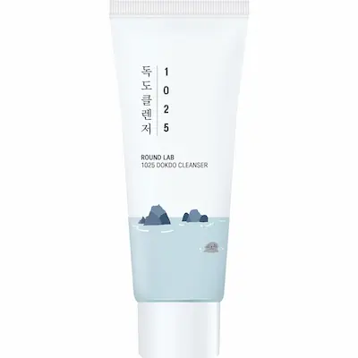
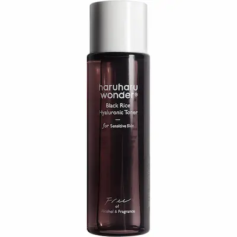
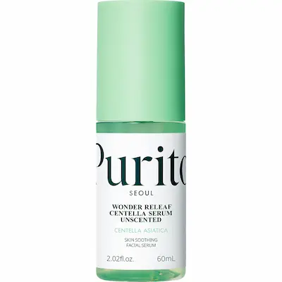
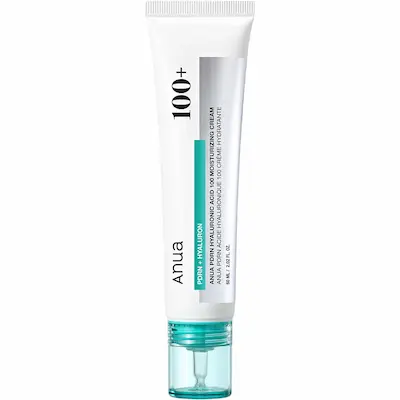
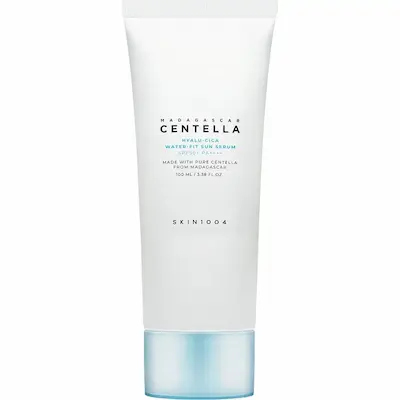

ANUA PDRN Hyaluronic Acid 100 Moisturizing Cream — cremă hidratantă cu PDRN și 10 forme de acid hialuronic
Cremă coreeană pentru persoanele care doresc să acorde mai multă atenție hidratării pielii și menținerii unui aspect neted și îngrijit. Analizăm formula cu PDRN, 10 forme de acid hialuronic, niacinamidă, squalane și colagen hidrolizat, precum și rolul ingredientelor-cheie în îngrijirea cosmetică a pielii.
De ce merită atenție această cremă?
ANUA PDRN Hyaluronic Acid 100 Moisturizing Cream este o cremă hidratantă coreeană destinată persoanelor care doresc să acorde mai multă atenție hidratării, netezimii și aspectului îngrijit al pielii. Dacă pielea pare uscată, are un aspect tern sau apare senzația de piele care ține după curățare, merită să iei în considerare produsele cu ingrediente hidratante și emoliente. Formula acestei creme se remarcă prin combinația de PDRN, 10 forme de acid hialuronic, niacinamidă, squalane și colagen hidrolizat.
PDRN este un ingredient asociat în cosmetice cu Sodium DNA și utilizat în formule destinate îngrijirii pielii. Acidul hialuronic este prezent în zece forme, conform informațiilor declarate de producător, combinație concepută pentru a susține hidratarea pielii. Niacinamida completează formula, iar squalane contribuie la emolierea pielii și la menținerea confortului acesteia. Totuși, prezența acestor ingrediente în cremă nu garantează un efect de întinerire, repararea ADN-ului sau regenerarea țesuturilor. Rezultatele utilizării depind de formula completă, de regularitatea rutinei și de particularitățile fiecărui tip de ten.
În această recenzie vom analiza în detaliu compoziția ANUA PDRN Hyaluronic Acid 100 Moisturizing Cream, rolul PDRN, al diferitelor forme de acid hialuronic și al celorlalte ingrediente de îngrijire. Vom vedea cui i s-ar putea potrivi crema, cum o poți integra corect în rutina zilnică și cu ce alte produse o poți combina pentru o îngrijire completă a pielii.
Textura și prima utilizare
ANUA PDRN Hyaluronic Acid 100 Moisturizing Cream este o cremă hidratantă coreeană pentru persoanele care doresc să completeze rutina zilnică și să acorde mai multă atenție hidratării, catifelării și aspectului îngrijit al pielii. Atunci când alegi un astfel de produs, contează nu doar prezența PDRN și a celor 10 forme de acid hialuronic, ci și cât de confortabil se simte crema pe piele și cât de bine se integrează în ceilalți pași ai rutinei.
Crema se aplică, de regulă, la finalul rutinei de îngrijire, după toner, ser sau esență. Completează rutina cu ingrediente hidratante și emoliente. Formula ANUA combină squalane, niacinamidă, colagen hidrolizat și mai multe forme de acid hialuronic. Producătorul și comerciantul descriu textura ca fiind lejeră, cu absorbție rapidă și fără senzație lipicioasă. Totuși, consistența, viteza de absorbție și aspectul final trebuie evaluate la aplicare: senzațiile pot varia în funcție de tipul de ten și de cantitatea folosită.
Crema poate fi de interes pentru persoanele care caută produse de îngrijire pentru tenul cu tendință de uscare, deshidratare sau aspect tern. Pentru tenul uscat, poate fi folosită ca ultim pas hidratant, în timp ce pentru tenul mixt sau gras este important să ții cont de cât de bogată este întreaga rutină și de senzația lăsată după aplicare. Dacă ai tenul sensibil, introdu produsul treptat și urmărește reacția pielii.
La prima utilizare, aplică o cantitate mică de cremă pe tenul curat, după toner, ser sau esență, dacă acestea fac parte din rutina ta. Distribuie uniform produsul, evitând zona ochilor, dacă producătorul nu recomandă altfel. Crema poate fi utilizată dimineața și seara. În rutina de dimineață, încheie cu un produs de protecție solară cu spectru larg și SPF 30 sau mai mare. Dacă apar senzație intensă de arsură, iritație sau roșeață persistentă, întrerupe utilizarea.
Este important de reținut că textura confortabilă și toleranța produsului sunt aspecte individuale. Faptul că această cremă se potrivește altor persoane nu garantează aceeași reacție sau aceleași rezultate pentru fiecare tip de ten.


Cu ce produse poți combina ANUA PDRN Hyaluronic Acid 100 Moisturizing Cream?
ANUA PDRN Hyaluronic Acid 100 Moisturizing Cream poate fi folosită ca ultim pas al unei rutine de îngrijire orientate spre menținerea hidratării, catifelării și aspectului neted al pielii. Formula conține deja PDRN, 10 forme de acid hialuronic, niacinamidă și squalane, așa că este recomandat să alegi celelalte produse în funcție de nevoile tenului, fără să încarci rutina cu prea multe ingrediente active.
1. Curățare — Round Lab 1025 Dokdo Cleanser
Pentru primul pas al rutinei poți alege Round Lab 1025 Dokdo Cleanser, un produs de curățare delicat, cu textură cremoasă. Acesta ajută la îndepărtarea impurităților, a excesului de sebum și a reziduurilor de machiaj, pregătind pielea pentru etapele următoare. Folosește o cantitate mică și clătește bine cu apă. După curățare, pielea nu ar trebui să se simtă excesiv de uscată sau să prezinte senzația de piele care ține.
2. Toner — Haruharu Wonder Black Rice Hyaluronic Toner Fragrance Free
Dacă pielea are nevoie de hidratare suplimentară după curățare, poți adăuga Haruharu Wonder Black Rice Hyaluronic Toner Fragrance Free. Tonerul ajută la pregătirea pielii pentru aplicarea cremei și completează rutina cu ingrediente hidratante. Varianta fără parfum poate fi o opțiune practică pentru persoanele care preferă produsele fără miros adăugat. Aplică tonerul după curățare, apoi continuă cu crema ANUA. Dacă pielea se simte confortabil și fără acest strat suplimentar, poți sări peste el.
3. Ser suplimentar — Purito SEOUL Wonder Releaf Centella Serum Unscented
În zilele în care dorești să acorzi mai multă atenție confortului pielii, poți folosi Purito SEOUL Wonder Releaf Centella Serum Unscented. Serul cu Centella asiatica completează rutina de bază și poate fi o opțiune pentru persoanele care caută un produs destinat pielii predispuse la sensibilitate și disconfort. Aplică-l după toner, apoi folosește crema ANUA. Serul suplimentar nu este obligatoriu: dacă tenul se simte bine doar cu toner și cremă, te poți limita la acești doi pași.
4. Hidratare — ANUA PDRN Hyaluronic Acid 100 Moisturizing Cream
Această cremă este produsul central al selecției și reprezintă ultimul pas al rutinei de hidratare. Formula combină PDRN (Sodium DNA), mai multe forme de acid hialuronic, niacinamidă, squalane și colagen hidrolizat. Aplică o cantitate mică după toner și ser, dacă îl folosești. Crema poate fi inclusă atât în rutina de dimineață, cât și în cea de seară, respectând instrucțiunile producătorului și ținând cont de felul în care reacționează pielea.
5. Protecție solară — SKIN1004 Madagascar Centella Hyalu-Cica Water-Fit Sun Serum SPF50+ PA++++
Dimineața, încheie rutina cu produsul de protecție solară SKIN1004 Madagascar Centella Hyalu-Cica Water-Fit Sun Serum SPF50+ PA++++. Este un produs cu textură lejeră și factor ridicat de protecție împotriva radiațiilor UVA și UVB. Aplică o cantitate suficientă și uniformă după crema ANUA și reaplică pe parcursul zilei conform instrucțiunilor, în special după transpirație, ștergerea pielii sau perioade îndelungate petrecute în aer liber. Protecția solară este importantă în rutina zilnică indiferent dacă folosești produse cu PDRN sau acid hialuronic.
Cum îți organizezi rutina?
Dimineața: Round Lab 1025 Dokdo Cleanser → Haruharu Wonder Black Rice Hyaluronic Toner Fragrance Free → ANUA PDRN Hyaluronic Acid 100 Moisturizing Cream → SKIN1004 Madagascar Centella Hyalu-Cica Water-Fit Sun Serum SPF50+ PA++++.
Seara: Round Lab 1025 Dokdo Cleanser → Haruharu Wonder Black Rice Hyaluronic Toner Fragrance Free → Purito SEOUL Wonder Releaf Centella Serum Unscented, dacă este necesar → ANUA PDRN Hyaluronic Acid 100 Moisturizing Cream.
Nu este obligatoriu să folosești toate produsele în același timp. Pentru o rutină simplă sunt suficiente o curățare delicată și crema ANUA, iar dimineața și un produs de protecție solară. Tonerul și serul pot fi introduse treptat, dacă pielea are nevoie de îngrijire suplimentară. Când adaugi produse noi, urmărește toleranța individuală și evită produsele care provoacă iritații sau disconfort.
Selecție de produse de la Beauty Panda
Selecție editorială Estetica Lens.
Am ales produse coreene care pot completa rutina de îngrijire cu
ANUA PDRN Hyaluronic Acid 100 Moisturizing Cream: curățare
delicată, hidratare suplimentară, ser pentru îngrijirea pielii și
protecție solară.
Disponibilitatea și condițiile actuale de achiziție pot fi
verificate direct la
BeautyPanda.

Round Lab 1025 Dokdo Cleanser
Curățare delicată
Produs de curățare care ajută la îndepărtarea impurităților și a excesului de sebum înainte de aplicarea produselor hidratante.

Haruharu Wonder Black Rice Hyaluronic Toner Fragrance Free
Hidratare suplimentară
Toner cu acid hialuronic, potrivit pentru un pas suplimentar de hidratare după curățare și înainte de aplicarea cremei.

Purito SEOUL Wonder Releaf Centella Serum Unscented
Îngrijire suplimentară
Ser cu Centella asiatica, care poate fi inclus în rutină pentru îngrijirea suplimentară a pielii predispuse la sensibilitate și disconfort.

ANUA PDRN Hyaluronic Acid 100 Moisturizing Cream
Produsul principal al recenziei
Cremă hidratantă cu PDRN, 10 forme de acid hialuronic, niacinamidă și squalane, pentru îngrijirea zilnică a pielii.

SKIN1004 Madagascar Centella Hyalu-Cica Water-Fit Sun Serum
Protecție solară
Produs de protecție solară SPF50+ PA++++ pentru ultimul pas al rutinei de dimineață, după crema hidratantă.
Analiza compoziției ANUA PDRN Hyaluronic Acid 100 Moisturizing Cream
Principalul aspect care diferențiază ANUA PDRN Hyaluronic Acid 100 Moisturizing Cream este combinația dintre PDRN (Sodium DNA), 10 forme de acid hialuronic și ingrediente complementare, incluse într-o formulă hidratantă. Compoziția conține și niacinamidă, squalane, colagen hidrolizat și extracte vegetale. Această combinație face crema interesantă pentru îngrijirea zilnică a pielii care are nevoie de hidratare suplimentară, catifelare și confort.
Printre ingredientele importante ale formulei se numără Squalane, Glycerin, Niacinamide, Hydrolyzed Collagen, Sodium DNA și diferite forme de acid hialuronic. Componenta hidratantă este completată de ingrediente emoliente, iar extractele vegetale și derivații de centella diversifică grupul de ingrediente de îngrijire. Să analizăm principalele categorii de ingrediente și rolul lor în îngrijirea cosmetică a pielii.
1. PDRN (Sodium DNA) — ingredientul distinctiv al formulei
Sodium DNA este un ingredient asociat conceptului PDRN, utilizat în formule cosmetice destinate îngrijirii pielii. În crema ANUA, acesta este unul dintre ingredientele-cheie care contribuie la poziționarea produsului. PDRN este asociat, în general, cu fragmente de ADN utilizate în produse cosmetice și profesionale pentru îngrijirea pielii.
De ce este important: Sodium DNA face formula interesantă pentru persoanele care doresc să încerce produse cosmetice cu PDRN. Totuși, prezența acestui ingredient în cremă nu înseamnă că produsul repară ADN-ul celulelor, regenerează țesuturile sau oferă efecte medicale. Rezultatele îngrijirii topice depind de formula completă, de concentrațiile ingredientelor și de particularitățile individuale ale pielii.
2. Zece forme de acid hialuronic — baza hidratantă
Potrivit producătorului, formula conține zece forme de acid hialuronic și derivați ai acestuia. Printre ele se numără Sodium Hyaluronate, Hydrolyzed Hyaluronic Acid, Hyaluronic Acid, Dimethylsilanol Hyaluronate, Hydrolyzed Sodium Hyaluronate, Potassium Hyaluronate, Hydroxypropyltrimonium Hyaluronate, Sodium Hyaluronate Crosspolymer, Sodium Hyaluronate Dimethylsilanol și Sodium Acetylated Hyaluronate.
De ce este important: diferite forme de acid hialuronic sunt utilizate în cosmetice pentru a susține hidratarea pielii. Acestea diferă prin structură și proprietăți, iar combinarea lor permite diversificarea componentei hidratante a formulei. Totuși, numărul formelor nu garantează, de unul singur, un anumit nivel de hidratare. Contează concentrațiile, combinația ingredientelor și proprietățile produsului finit.
3. Niacinamide — niacinamidă
Niacinamide, cunoscută și ca vitamina B3, apare destul de sus în lista INCI publicată. Este un ingredient cosmetic utilizat pe scară largă, care contribuie la menținerea barierei cutanate, a unui aspect îngrijit și a unui ton mai uniform al pielii. Este inclus frecvent în formule destinate tenului cu aspect tern sau textură neuniformă.
De ce este important: niacinamida completează conceptul hidratant al cremei și extinde rolul formulei dincolo de simpla catifelare a pielii. Concentrația exactă a ingredientului nu poate fi stabilită doar pe baza listei INCI, așa că poziția sa în listă nu este suficientă pentru a estima intensitatea efectului.
4. Squalane — squalane și rolul său emolient
Squalane apare la începutul listei de ingrediente. Este un ingredient emolient care ajută la diminuarea senzației de uscăciune, la menținerea catifelării pielii și la obținerea unei texturi confortabile. Squalane este utilizat frecvent în creme și în alte produse de îngrijire datorită proprietăților sale emoliente.
De ce este important: squalane completează acțiunea ingredientelor hidratante și contribuie la confortul pielii. Este deosebit de interesant în formule destinate pielii cu tendință de uscare și senzație de piele care ține. Totuși, senzația finală după aplicare depinde nu doar de squalane, ci de întreaga bază a cremei.
5. Glycerin, Butylene Glycol și alți agenți hidratanți
Formula conține Glycerin, Butylene Glycol, Pentylene Glycol, Propanediol, Diglycerin și Sodium Lactate. Acești compuși fac parte din categoria ingredientelor umectante, care ajută la menținerea hidratării în straturile superficiale ale pielii și la reducerea senzației de uscăciune. De asemenea, contribuie la formarea texturii și la proprietățile bazei cosmetice.
De ce este important: ingredientele umectante acționează împreună cu acidul hialuronic și componentele emoliente. Această combinație susține utilizarea cremei în rutina zilnică, în care contează atât aportul de ingrediente hidratante, cât și menținerea senzației de catifelare și confort a pielii.
6. Hydrolyzed Collagen — colagen hidrolizat
Hydrolyzed Collagen este prezent în cremă ca unul dintre ingredientele complementare de îngrijire. Colagenul hidrolizat se obține prin descompunerea colagenului în fragmente mai mici. În produsele cosmetice este utilizat în principal ca ingredient care ajută la menținerea hidratării și la obținerea unei senzații plăcute la suprafața pielii.
De ce este important: colagenul hidrolizat completează componenta hidratantă a formulei. Totuși, prezența sa în cremă nu înseamnă că produsul aplicat reface rezervele naturale de colagen din straturile profunde ale pielii sau că îi reconstruiește direct structura.
7. Extracte vegetale — îngrijire suplimentară
Lista INCI include extracte de Melia Azadirachta (neem), Coccinia Indica, Aloe Barbadensis, Solanum Melongena (vânătă), Ocimum Sanctum, Curcuma Longa (turmeric), Corallina Officinalis și Centella Asiatica. Aceste ingrediente de origine vegetală sunt utilizate în formule cosmetice pentru a completa îngrijirea de bază.
De ce este important: extractele vegetale diversifică compoziția și completează conceptul de îngrijire al produsului. Totuși, doar pe baza listei de ingrediente nu se poate stabili cât contribuie fiecare extract la efectul cremei finite. Pentru aceasta sunt importante concentrațiile, metoda de obținere a extractelor și rezultatele testării formulei respective.
8. Madecassoside și Asiaticoside — compuși asociați cu centella
Formula conține și Madecassoside și Asiaticoside, compuși asociați cu Centella Asiatica. Aceste ingrediente sunt utilizate pe scară largă în cosmetice destinate îngrijirii pielii predispuse la sensibilitate și disconfort. În formula ANUA, ele completează componenta de ingrediente vegetale.
De ce este important: derivații de centella diversifică formula și pot fi de interes pentru persoanele care preferă produse cu ingrediente orientate spre confortul pielii. Totuși, nici prezența acestor compuși nu garantează că produsul va fi potrivit pentru orice tip de ten sensibil. Reacția individuală depinde de întreaga formulă.
9. Diphenylsiloxy Phenyl Trimethicone și alte ingrediente care influențează textura
Formula conține Diphenylsiloxy Phenyl Trimethicone, PCA Dimethicone, Behenyl Alcohol, C14-22 Alcohols și alte ingrediente care contribuie la textura cremei, la distribuirea acesteia pe piele și la proprietățile emoliente. Ingredientele siliconice pot îmbunătăți alunecarea produsului la aplicare, iar alcoolii grași sunt utilizați ca ingrediente emoliente și agenți de structurare.
De ce este important: combinația dintre umectanți, emolienți și ingredientele care determină textura influențează modul în care crema se întinde, se absoarbe și se simte după aplicare. De aceea, confortul oferit de produs nu ar trebui evaluat doar în funcție de prezența unui singur ingredient.
10. Adenosine — adenozină
Adenosine este un ingredient utilizat pe scară largă în produsele cosmetice destinate îngrijirii pielii cu semne vizibile de îmbătrânire. Este inclus în formule concepute pentru menținerea unui aspect neted și îngrijit al pielii.
De ce este important: adenozina completează formula cremei, care conține deja ingrediente hidratante și emoliente. Totuși, prezența Adenosine nu garantează un efect de lifting pronunțat sau eliminarea ridurilor. Rezultatul depinde de formula completă și de regularitatea rutinei de îngrijire.
11. Stabilizatori, agenți de îngroșare și ingrediente auxiliare
Compoziția include și 1,2-Hexanediol, Ethylhexylglycerin, Sodium Phytate, Ammonium Acryloyldimethyltaurate/VP Copolymer, Carbomer, Acrylates/C10-30 Alkyl Acrylate Crosspolymer, PVM/MA Copolymer și Aminomethyl Propanediol. Aceste ingrediente contribuie la stabilitatea formulei, reglează consistența și ajută la obținerea proprietăților necesare produsului cosmetic finit.
De ce este important: ingredientele auxiliare nu sunt întotdeauna în centrul descrierilor unui produs, dar sunt necesare pentru obținerea unei formule stabile și ușor de utilizat. În cazul pielii sensibile, este important să iei în considerare întreaga listă INCI, deoarece reacțiile individuale pot apărea la diferite ingrediente cosmetice.
Concluzie: ce face interesantă compoziția cremei?
ANUA PDRN Hyaluronic Acid 100 Moisturizing Cream combină Sodium DNA, asociat conceptului PDRN, zece forme de acid hialuronic declarate de producător, niacinamidă, squalane și colagen hidrolizat. Formula este completată de glicerină și alți agenți hidratanți, extracte vegetale, derivați de centella, adenozină și ingrediente care contribuie la textura cremei.
În ansamblu, este o formulă hidratantă cu mai multe ingrediente, axată pe catifelarea pielii și menținerea confortului acesteia. Crema poate fi utilizată ca ultim pas al rutinei de îngrijire, după curățare, toner și ser, dacă acesta face parte din rutina ta. Dimineața, aplică întotdeauna un produs de protecție solară după cremă.
Este important de reținut că ordinea ingredientelor în lista INCI oferă indicii despre compoziție, dar nu permite stabilirea concentrațiilor exacte ale tuturor ingredientelor. Afirmația referitoare la cele zece forme de acid hialuronic provine din descrierea producătorului. Înainte de publicare, este recomandat să verifici lista finală de ingrediente pe ambalajul versiunii concrete a produsului, deoarece formula și etichetarea se pot actualiza.


Unde găsești?
ANUA Azelaic Acid 10 Hyaluron Redness Soothing Serum 30 ml este disponibil la BeautyPanda. Pentru a afla disponibilitatea și prețul actual, contactează direct vânzătorul.
Magazinele Beauty Panda din Moldova:
📍 Soroca
str. Grigore Vieru 9B, Soroca, Moldova, MD-3001
📍 Drochia
str. 31 August 20/C, Drochia, Moldova
*Disponibilitatea, prețul și condițiile de achiziție se recomandă a fi verificate la vânzător înainte de vizită. Linkul duce către pagina vânzătorului de pe Instagram.
Întrebări frecvente
Pot folosi ANUA PDRN Hyaluronic Acid 100 Moisturizing Cream în fiecare zi?
Da, crema poate fi inclusă în rutina zilnică, dimineața și seara, dacă pielea o tolerează bine și utilizarea respectă instrucțiunile producătorului. Aplică o cantitate mică după curățare, toner și ser, dacă acesta face parte din rutina ta. Dacă apar iritații pronunțate, mâncărime sau roșeață persistentă, întrerupe utilizarea.
Pentru ce tip de ten este potrivită această cremă?
Crema poate fi o opțiune pentru tenul uscat, normal sau deshidratat, atunci când obiectivul este menținerea hidratării și a catifelării. Formula conține acid hialuronic, glicerină, squalane și alte ingrediente emoliente. Pentru tenul mixt sau gras, este important să ții cont de senzația lăsată pe piele și de cantitatea aplicată. Potrivirea formulei depinde de toleranța individuală la toate ingredientele.
Ajută ANUA PDRN Hyaluronic Acid 100 Moisturizing Cream la reducerea ridurilor?
Crema conține ingrediente hidratante și emoliente care contribuie la menținerea unui aspect mai neted și îngrijit al pielii. Hidratarea adecvată poate face liniile fine asociate uscăciunii mai puțin vizibile. Totuși, produsul nu garantează eliminarea ridurilor profunde, nu înlocuiește procedurile cosmetice și nu oferă un efect medical de întinerire.
Ce este PDRN și de ce este inclus în cremă?
PDRN este denumirea utilizată pentru o grupă de polidezoxiribonucleotide asociate cu fragmente de ADN. În compoziția acestei creme este menționat Sodium DNA, un ingredient asociat conceptului PDRN. Prezența sa face formula interesantă pentru persoanele care aleg produse cosmetice moderne ce conțin acest ingredient. Totuși, aplicarea cremei nu înseamnă repararea ADN-ului celulelor, regenerarea țesuturilor sau obținerea unui efect medical.
Ce înseamnă 10 forme de acid hialuronic?
Producătorul declară că formula conține zece forme de acid hialuronic și derivați ai acestuia. Acestea diferă prin structură și proprietăți, dar sunt utilizate în cosmetice în principal pentru susținerea hidratării pielii. Numărul formelor nu garantează, de unul singur, un anumit rezultat: contează concentrațiile ingredientelor, caracteristicile formulei complete și reacția individuală a pielii.
Cum se aplică corect crema?
De regulă, crema se aplică după curățare, toner și ser, dacă folosești unul. Distribuie o cantitate mică pe pielea feței, evitând zona din jurul ochilor, dacă producătorul nu recomandă altfel. Crema poate fi utilizată dimineața și seara. În rutina de dimineață, încheie îngrijirea cu un produs de protecție solară cu spectru larg și SPF 30 sau mai mare.
Pot combina crema cu retinol și acizi exfolianți?
Da, crema hidratantă poate fi inclusă în aceeași rutină cu retinol sau acizi exfolianți. De obicei, se aplică după produsul activ respectiv, ținând cont de instrucțiunile producătorului și de toleranța pielii. Dacă abia începi să folosești retinol sau acizi, introdu produsele treptat și nu adăuga mai multe ingrediente active noi în același timp. Dacă apare o iritație pronunțată, redu frecvența utilizării produselor active și reevaluează rutina.
Pot folosi crema împreună cu toner și ser?
Da. Crema ANUA poate fi combinată cu toner și ser, dacă și celelalte produse sunt potrivite pentru tenul tău. În general, ordinea este: curățare, toner, ser și, la final, cremă. Când alegi produse suplimentare, ține cont de compoziția, textura și recomandările producătorilor. Nu este obligatoriu să aplici multe straturi: dacă tenul se simte confortabil doar cu un produs de curățare și cremă, te poți limita la această rutină de bază.
Este potrivită crema pentru tenul gras?
Acest lucru depinde de preferințele și de reacția individuală a pielii. Formula conține squalane și alte ingrediente emoliente, așa că este important să observi cât de confortabil se simte produsul după aplicare. Dacă ai tenul cu tendință de îngrășare, începe cu o cantitate mică și, dacă este necesar, folosește crema în special seara. Dacă lasă o senzație prea bogată sau provoacă disconfort, poți alege o variantă cu textură mai lejeră.
Ce ar trebui să fac dacă apar senzație de arsură sau roșeață după aplicare?
Dacă apare o senzație de arsură intensă sau persistentă, mâncărime, roșeață pronunțată ori umflare, întrerupe utilizarea produsului. Dacă este necesar, îndepărtează cu grijă crema prin clătire. Dacă simptomele persistă, se agravează sau sunt însoțite de umflare, solicită sfatul unui medic. Chiar și produsele cu ingrediente hidratante și de îngrijire pot provoca reacții individuale.
Când pot apărea primele rezultate?
Senzația de hidratare și catifelare poate apărea chiar după primele aplicări. Modificările aspectului pielii ar trebui evaluate în urma utilizării regulate, pe o perioadă mai lungă, însă intensitatea rezultatelor diferă de la o persoană la alta și nu este garantată. Urmărește confortul pielii și respectă recomandările producătorului. Pe timpul zilei, folosește obligatoriu un produs de protecție solară cu spectru larg și SPF 30 sau mai mare.